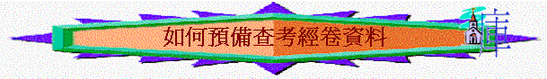

一.決定書卷
～可以用一卷經卷，分開幾次查考
二.仔細研讀
三.尋找主題
1.個人細讀的理解
～讀完整卷書後給你的印象，你看到的中心思想？若仍不知道，可再多讀幾次，求真理的靈使我們明白。
2.經文直接的說明
～聖經的經卷有時也會直接說明整卷書寫成的原因及目的，例如：
例如:約翰福音
經文：「耶穌在門徒面前另外行了許多神蹟，沒有記在這書上。但記這些事要叫你們信耶穌是基督，是神的兒子，並且叫你們信了他，就可以因他的名得生命。」約20:30-31
主題：明顯是見證耶穌是神的兒子，叫人信祂得永生
～另外，有時聖經經卷中也會出現一些重要經文(key verse)，啟發我們思想該卷書的重要主題，例如利19:2令我們聯想利未記的重要主題和聖潔有關。
～當然若有些經卷沒有直接說明，我們可以從以下另外的方法找出
3.書中重覆的字眼
～若一卷書中，不斷重覆相同/類似字眼及事情，我們當留心，可能因為作者想表達同一真理，所以會多用相同/類似字句/事情
～約翰福音：多「父」、「神的兒子」、「信」字→明顯是想表達叫人信天父的兒子就是基督
4.當時時代的背景
～通常一卷書的形成，是因為當時的信徒面對非常的事，特別是新約書卷，很多時候因為信徒面對異端、苦難等衝激，所以作者寫成書卷回應當時時代信徒的需要，若瞭解了背景，更易明白整卷書的目的。
～如約翰福音寫作的對象應是外邦人，他們受希臘哲學文化思想影响，他們以前多崇尚道(logo)，所以作者指明耶穌就是道，信祂的得永生；另外，他們也受諾斯底派影响，否認神的兒子曾落在人間，否認耶穌的神性，所以作者用神蹟證明耶穌是神的兒子。
四.建立脈胳
～按主題來建立經卷的大綱
～如約翰福音的結構脈絡
別人見証耶穌是神的兒子(1-2)→耶穌見證自己是神的兒子(3-19)→門徒要為主耶穌作見証(20-21)
五.查考初稿
1.決定總共查考次數
2.決定每次查考段落
～未必一定要每次查一章經文來作每次的查考內容（例如未必今次查腓1，下次查腓2）
～可按書卷的分段及脈胳來決定決定每次查考段落
～最好每次也有一個重要的主題想帶出，通常都是經卷的大綱主題
六.詳細內容
～用已決定的經卷段落經文來查考，我們試用來12:1-4為例
1.真理主題
～例如希伯來書12章的主題是信心的路程，但因查經時間有限，我們選了查來12:1-4，而這後的真理性主題可而是走信心的路程的方法
2.查考目標
～希望肢體查考完後，可知怎樣走信心的路
3.查考脈胳
A.段落大網
如何跑信心的路程(12:1-4)
(1)除去攔阻
(2)存心忍耐
(3)仰望基督
B.查考脈胳
查經主題：如何跑信心的路程
查考經文：來12:1-4
引言
(1)除去攔阻
(2)存心忍耐
(3)仰望基督
總結
C.設計問題
查經主題：如何跑信心的路程
查考經文：來12:1-4
引言問題：12:1提及路程，有沒有跑過長途賽或行過很長的路程？當時辛不辛苦？如何完成？基督徒又如何跑完神給我們的路程，我們從12:1-4中學習
分段問題：
|
真理主題（1）：
除去攔阻
經節：12:1 |
(1)理解經文意思問題
～12:1提到重擔?何謂重擔
(2)發掘當中真理問題
～12:1上半節提及我們當怎樣跑？
～要放下什麼?脫去什麼?
(3)融入生活應用問題
～今日信徒走天路時，又有甚麼重擔令我們走得不好？今日你又有沒有呢？
|
|
真理主題（2）：
存心忍耐
經節：12:1 |
(1)理解經文意思問題
～12:1提及忍耐，何謂忍耐？
不忍耐的相反是什麼？
(2)發掘當中真理問題
～12:1提及我們存甚麼心態走那前面的路程？
(3)融入生活應用問題
～試分享，在你信仰路上，學習忍耐的經歷？
|
|
真理主題（3）：
仰望基督
經節：12:2-4 |
(
1)理解經文意思問題
～12:3、5題到甚麼相同字眼？
～有甚麼事情可以令信主的人灰心？
～12:3-4又暗示甚麼事可以令信徒灰心？
～12:2上半節提及主有甚麼特性？試解釋「信心創始成終的耶穌」？
(2)發掘當中真理問題
～12:2-3提及不灰心的秘訣在於甚麼？是否仰望自己/仰望環境？
～為何仰望主，可以不灰心？
～主如何面對十字架的苦難？你認為「輕看羞辱」易不易？為甚麼？主為何可以面對？「擺在前面的喜樂」是甚麼意思？
(3)融入生活應用問題
～有沒有經歷過仰望主、思想主而令你有忍受及不灰心的經歷？試分享
|
總結問題：我們應如何走信心的路程？你在今次查經中又學到甚麼功課？